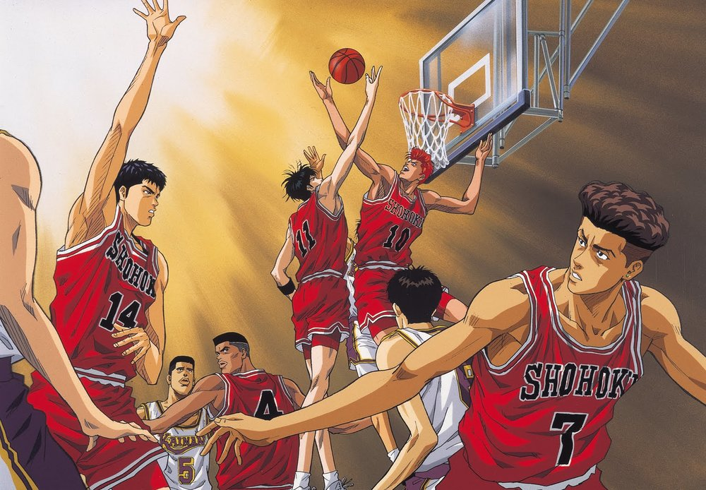
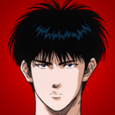

Historia
Slam Dunk narra la historia de la evolución como jugador de baloncesto y como persona de su protagonista, Hanamichi Sakuragi, un joven de 15 años, problemático y pandillero con un impresionante registro de rechazos amorosos a sus espaldas. Slam Dunk es un manga/anime. La trama sigue a Hanamichi Sakuragi, un estudiante de preparatoria que decide practicar Basketball para conquistar a Haruko Akagi, una chica de la cual él esta enamorado. y narra la historia de la evolución como jugador de Basketball y como persona del protagonista.
Información relevante
ICONOS - PREPARATORIA SHOHOKU
Hanamichi Sakuragi

Tekenori Akagi
